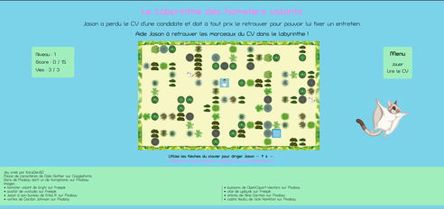
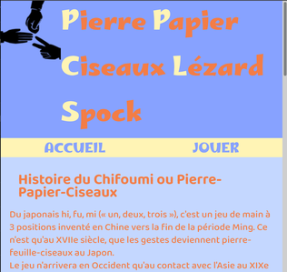

Projet front-end : Jeu CV
 Accès jeu Dépôt GithubLangages : HTML, CSS, Javascript, JQuery.
Au bout d'1,5 mois de formation, le premier projet est un jeu autours de notre CV. Site statique, non responsive.
Projet back-end : Chifoumi
https://karadev92.onrender.com/
(laissez le temps à l'hébergeur de démarrer le serveur :-)
Dépôt GithubLangages : HTML, CSS, Javascript
Stack : serveur NodeJS avec Express, base de données MongoDB Atlas, websocket avec Socket.io.
Au bout de 4 mois de formation, le deuxième projet est un jeu multi-joueurs en temps réel.
Projet final (à venir) : un réseau social
Langages : HTML, CSS, Javascript, Typescript
Stack : framework Angular 18, serveur NodeJS avec Express, base de données MongoDB Atlas, websocket avec Socket.io.
En février 2025, à la fin de la formation, le dernier projet est un réseau social type Facebook, avec :
- gestion authentification
- chat
- messagerie privée
- interface pour administrateurs (gestion des comptes, statistiques ...)